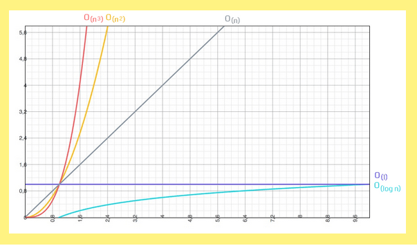

Dalam menghitung kompleksitas dalam sebuah kode, terdapat 2 dimensi didalamnya. Pertama adalah kompleksitas ruang atau space complexity yang berkaitan dengan berapa banyak ruang yang digunakan seperti memori ataupun harddisk komputer. Kedua adalah kompleksitas waktu atau time complexity yang berkaitan berapa lama baris kode dijalankan.
Kenapa dibutuhkan sebuah metode untuk menghitung efisiensi kode? Karena kita tidak bisa hanya mengatakan bahwa kumpulan kode ini dapat dijalankan selama lima detik. Padahal sangat banyak faktor penentu lainnya seperti jumlah datanya, koneksi, latensi, jumlah memori, kecepatan prosesor dan masih banyak yang lainnya. Oleh karna itu maka kita butuh sebuah metodologi untuk menghitungnya. Salah satu alat bantu yang bisa kita gunakan adalah notasi O besar atau Big-O Notation.
Big-O, yang merupakan notasi kompleksitas waktu asimptotik. Big-O, seperti namanya, dituliskan sebagai fungsi “O” dengan nilai masukan berupa tingkat pertumbuhan dari fungsi yang dijabarkan. Misalnya, algoritma perpangkatan dengan pertumbuhan linear yang kita kembangkan pada bagian sebelumnya memiliki kelas Big-O O(n). Karena berguna untuk mengkategorikan algoritma.
Big-O Notation atau notasi O besar adalah cara untuk mengkonversi keseluruhan langkah-langkah suatu algoritma kedalam bentuk Aljabar, yaitu dengan menghiraukan konstanta yang lebih kecil dan koefisien yang tidak berdampak besar terhadap keseluruhan kompleksitas permasalahan yang diselesaikan oleh algoritma tersebut. Notasi O besar merupakan skenario terburuk dari sebuah algoritma, dan biasanya terdapat notasi n yang merepresentasikan jumlah masukan. Berikut adalah diagram notasi O besar dengan masukan yang dimulai dari 0 hingga tak terhingga.

Dari diagram diatas terdapat beberapa notasi yang kerap muncul, yaitu: O(1) yang disebut constant time , O(log n) yang disebut Logarithmic Time, O(n) yang disebut Linear Time, O(n2) yang disebut Quadratic Time atau O(nn) yang disebut Exponential Time.
Notasi Big-O digunakan untuk mengkategorikan algoritma ke dalam fungsi yang menggambarkan batas atas (upper limit) dari pertumbuhan sebuah fungsi ketika masukan dari fungsi tersebut bertambah banyak. Singkatnya, perhitungan jumlah langkah dan pertumbuhannya yang kita lakukan pada bagian sebelumnya merupakan langkah-langkah untuk mendapatkan fungsi Big-O dari sebuah algoritma.
Notasi Big-Oh berguna untuk membandingkan beberapa algoritma dari untuk persoalan yang sama seperti menentukan yang terbaik.
Contoh: masalah pengurutan memiliki banyak algoritma penyelesaian,
Selection sort, insertion sort->T(n) = O(n2)
Quicksort->T(n) = O(n log n)
Karena n log n
< n 2 yang besar, maka algoritma quick sort lebih cepat (lebih baik, lebih mangkus) daripada algoritma selection sort dan insertion sort.
Adapun contoh-contoh dalam big-O notation adalah
Regular Big-O
2 O(1) --> It's just a constant number
2n + 10 O(n) --> n has the largest effect
5n2 O(n2) --> n2 has the largest effect.
Sederhananya, semua contoh yang ada diatas mengatakan bahwa “kita hanya akan melihat faktor yang memiliki dampak paling besar terhadap nilai yang dihasilkan oleh algoritma tersebut”.
klik untuk kembali